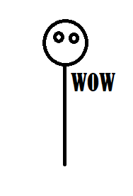

Index
|
Resume Page
|
Other
Christopher Siegfried ITMD 361 Projects
Project One
From here you'll be able to navigate to the other pages. Hopefully.

Here are a list of potential ideas
Have it be about polls and gathering random info (from comments on basecamp)
Have it be about one of the different games I play on a regular basis
Have it be a generic outline that doesn't exactly display any real content but instead is a framework for websites to come later
Have it be me learning to speedrun something (since that sounds fun)